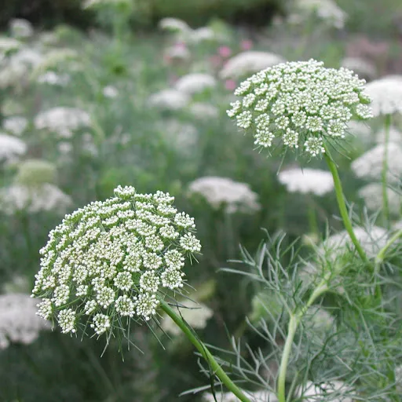
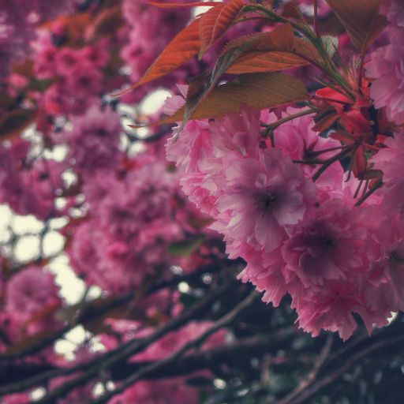
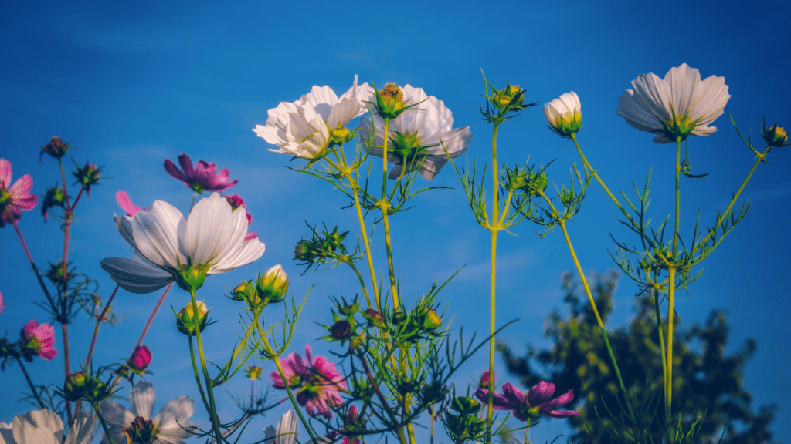
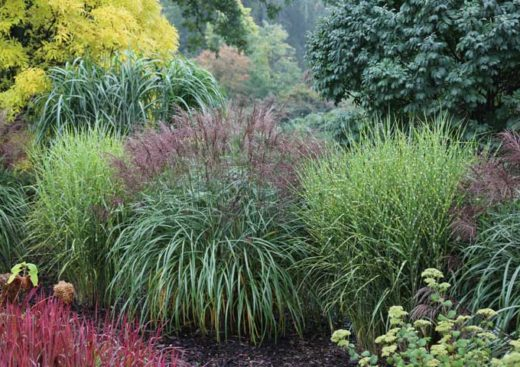

Produktem zapasowym jest skrobia. Mają sztywną, zwykle celulozową ścianę komórkową. Rośliny cechują się także zdolnością do nieprzerwanego wzrostu za sprawą tkanek twórczych mających stałą zdolność do podziału komórek.
Rośliny (Archaeplastida Adl i in. 2005, dawne nazwy naukowe: Vegetabilia, Plantae, Phytobionta, Plastida, Primoplantae) – eukariotyczne i autotroficzne organizmy, wykorzystujące energię promieniowania słonecznego za sprawą barwników asymilacyjnych zdarzają się wśród roślin także organizmy heterotroficzne– pasożytnicze, w tym też myko-heterotroficzne, ale mają one charakter wtórny.
Rośliny zbudowane są z komórek, tworzących u roślin wyżej uorganizowanych tkanki i organy (narządy). Umożliwiają one im oddychanie, odżywianie, wzrost i rozwój. Proces fotosyntezy prowadzą dzięki chloroplastom zawierającym chlorofil i pochodzącym z endosymbiozy sinic.
Zazwyczaj są trwale przytwierdzone do podłoża.Ewolucja spowodowała ogromne zróżnicowanie form ich budowy oraz przystosowanie do różnorodnych warunków środowiskowych panujących na Ziemi.
